Carrossel do perfil (na ordem)


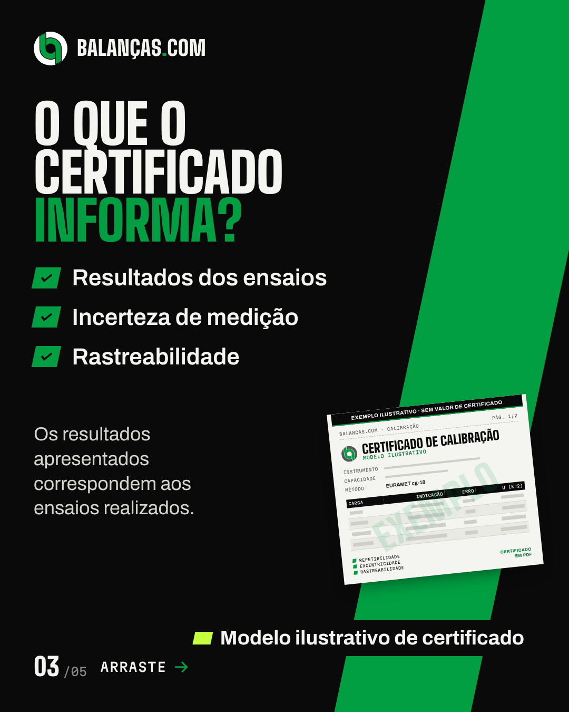
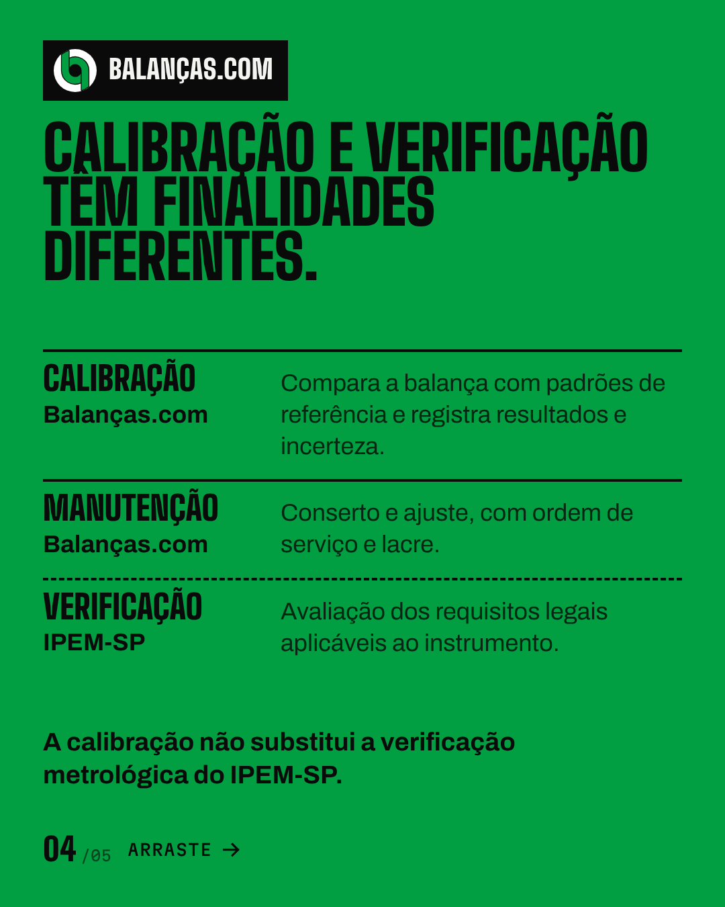
Revisão 3 das artes. Clique numa arte para abrir no tamanho real. Os textos de cada anúncio, as regras de texto e os dados a confirmar estão em TEXTOS-DOS-ANUNCIOS.md. O certificado que aparece nas artes é um exemplo ilustrativo, sem valor de certificado.
Anúncio ou post. A versão B fala de auditoria e por isso traz a condição de não acreditação na própria arte.
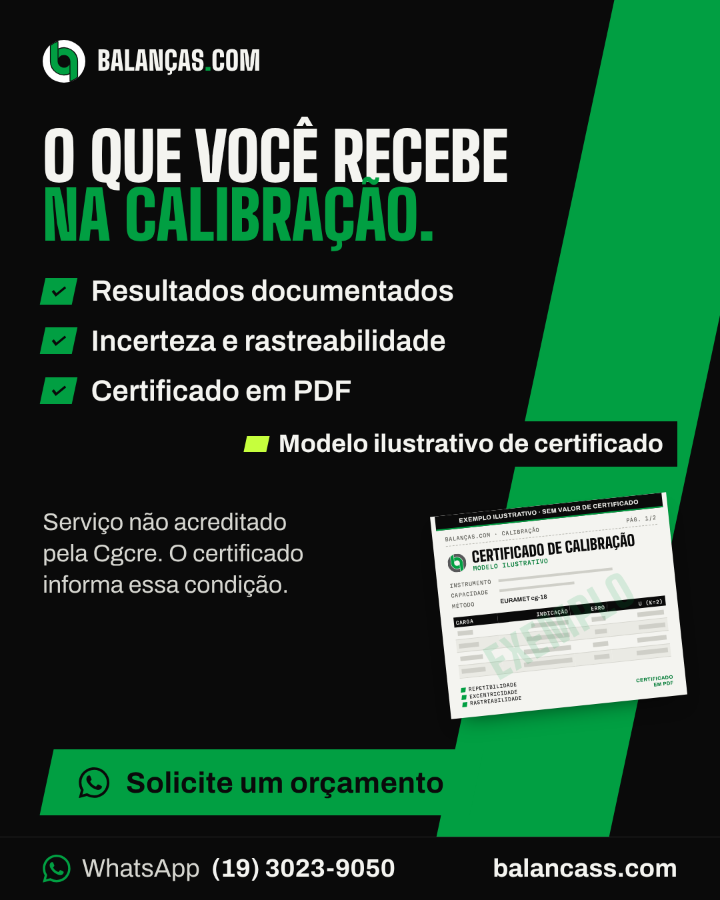
Para anúncio: a seta aponta para o botão da plataforma, que é o link. Não são vídeos.
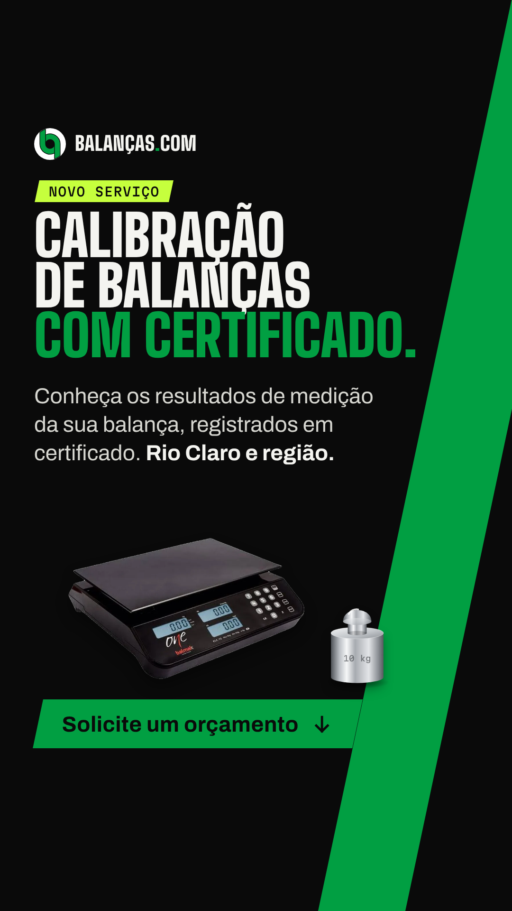
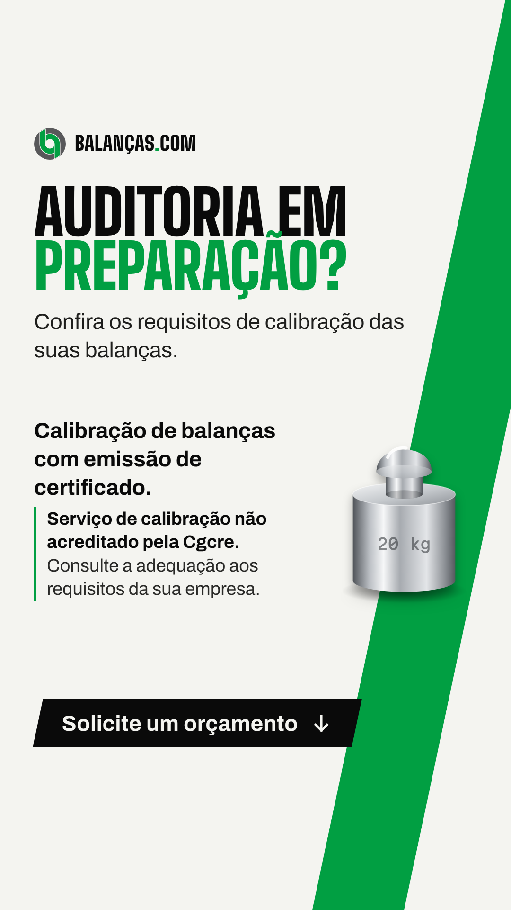
Ponha a figurinha de link logo abaixo de “Toque no link”.
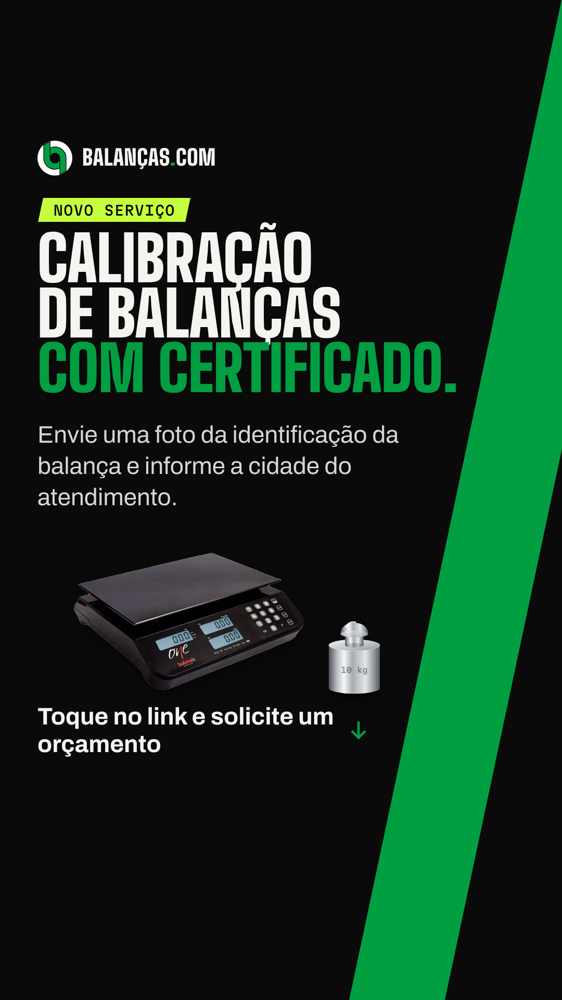
Quem vê pode responder o status; o telefone está escrito.
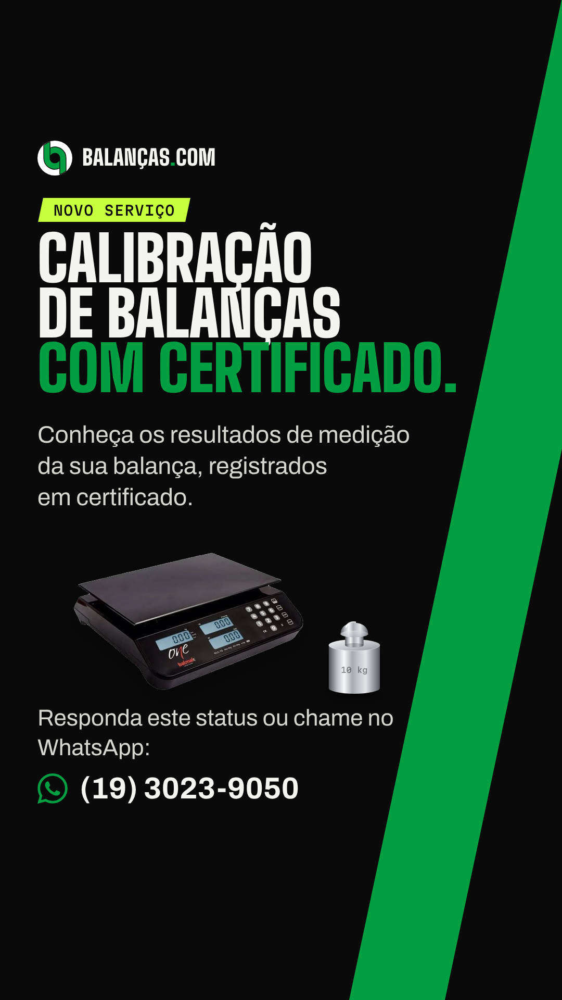


Institucional. Confira no celular e no computador o corte e a foto do perfil.
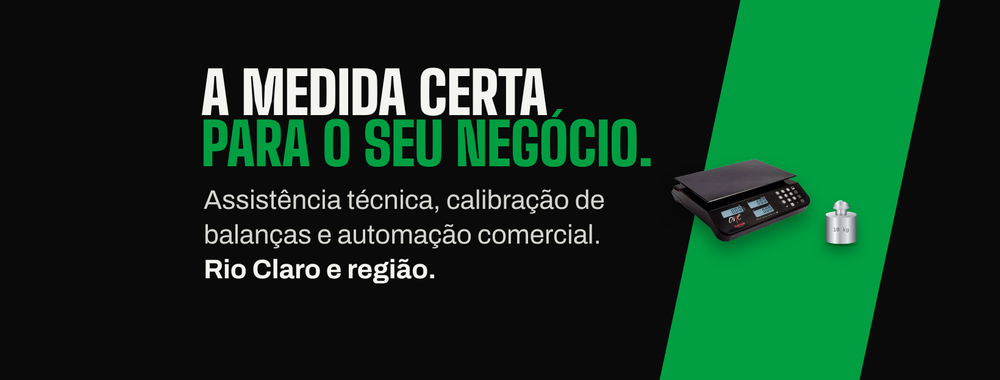
Para o feed, prefira a quadrada; a horizontal serve para anúncio com link.
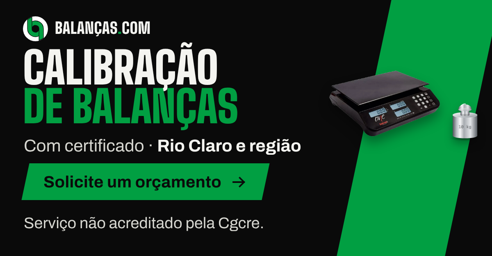
JPG abaixo de 150 KB.


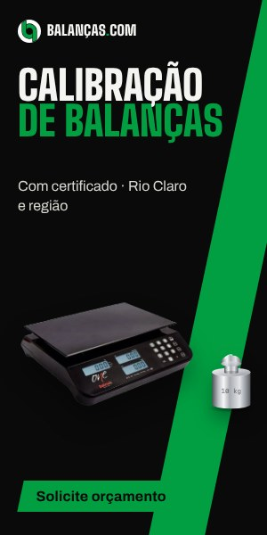


Composições ilustrativas: troque as duas imagens por fotos reais do atendimento assim que houver.

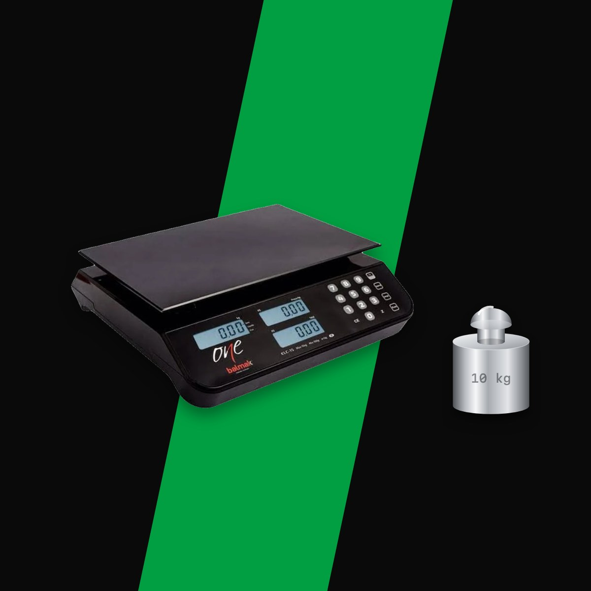
Vai no pacote do site (atualizacao.zip). Confira a prévia na página publicada.
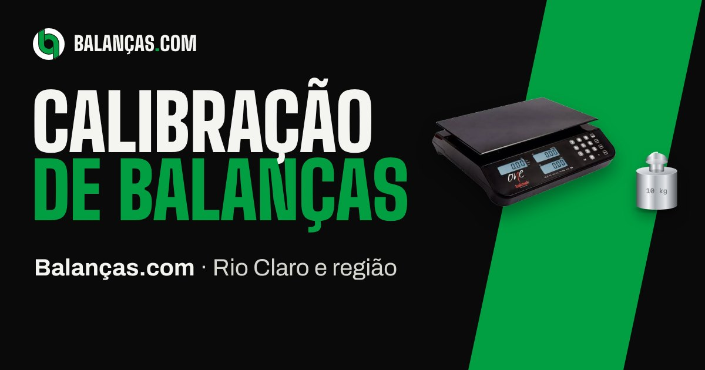